Last modified
한눈에 보기
대회 첫 참여라 다른 팀들에 비해 인원이 적고 알고리즘 완성도가 떨어졌습니다. 그래서 알고리즘의 기능별 코드 완성도를 챙기기보다, 실도로에서 완주 및 데이터 수집, 코스 완주를 목표로 했습니다. 따라서 각 알고리즘은 불완전할 수 있지만, 대회 예선 주행은 완료했습니다.
설계 흐름에서 제가 맡은 지점 상자를 누르면 기술 설명으로, 아래 번호는 진행 과정 사례로 이동합니다
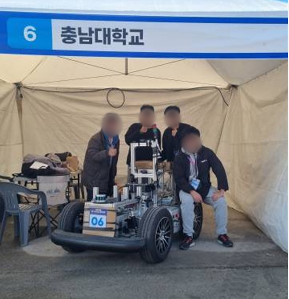

- 내 담당 — EKF 측위(센서퓨전) | 경로추종 | 주행 명령 판단 노드(프로토타입) | 실차 설정값·전륜 정렬 | 팀장
- 대회 — 예선(10분 주행 및 라바콘 곡면 코스 완주 시간) · 본선(15분 경로 주행 완주 시간) · GPS 음영구간 · 멈춰 있는 장애물 · 주차 미션
- 플랫폼 — ERP42 4륜 전기차 · LiDAR · RTK-GPS · IMU · 카메라 · 4인 팀(실개발 2~3인)
- 결과(팀) — 예선 코스 완주 · 다른 팀 기록에 밀려 본선 미진출
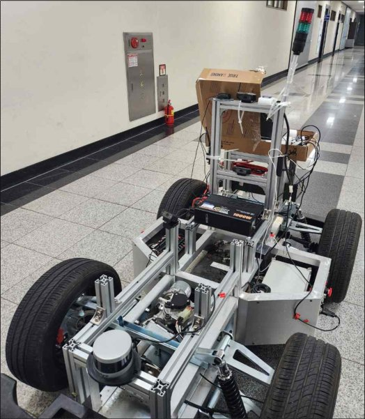
▶ 대회 진행 방식 참고 영상 — 우리 팀 시연이 아니라, 예선(트랙 주행·highway 예선 코스)을 통과한 상위 팀만 참가하는 본선 출전 팀들의 주행 영상입니다.
개발 중 알고리즘 테스트 기록 — 대회 주행 영상이 없어 대신 싣는 팀 내부 테스트 자료입니다. ▶ waypoint 추종 및 LiDAR 회피 테스트 영상
프로젝트 구현
차가 센서로 자기 위치를 계산하고, 미리 기록해 둔 경로점(waypoint)을 따라 스스로 방향을 꺾으며 달리게 하는 주행 프로그램입니다.
팀 시스템은 바퀴 회전량·GPS·IMU로 계산한 차의 위치를 바탕으로 경로추종이 조향량을 정하고, 차량 통신 프로그램이 조향·속도·브레이크 명령을 ERP42에 보내는 구조입니다.
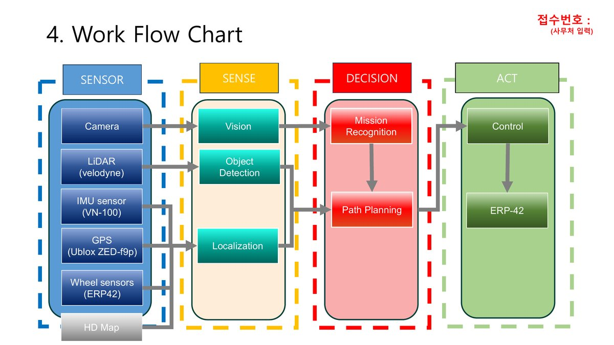
저는 개발에 함께 참여했고, 맡은 일은 아래 진행 과정에 적었습니다.
센서 및 하드웨어 설계 (센서 구성 · 알루미늄 프로파일 프레임 · 전력) 구현 참여
진행 과정 01 실차 조정과 반복 테스트02 ROS 2 센서 구동과 통합
ERP42 차체 위에 알루미늄 프로파일 프레임을 얹어 LiDAR·카메라·RTK-GPS·IMU와 노트북·전력 장비를 달고, 센서 데이터를 노트북의 ROS 2 노드가 받아 ERP42에 조향·속도·브레이크 명령을 보냅니다.
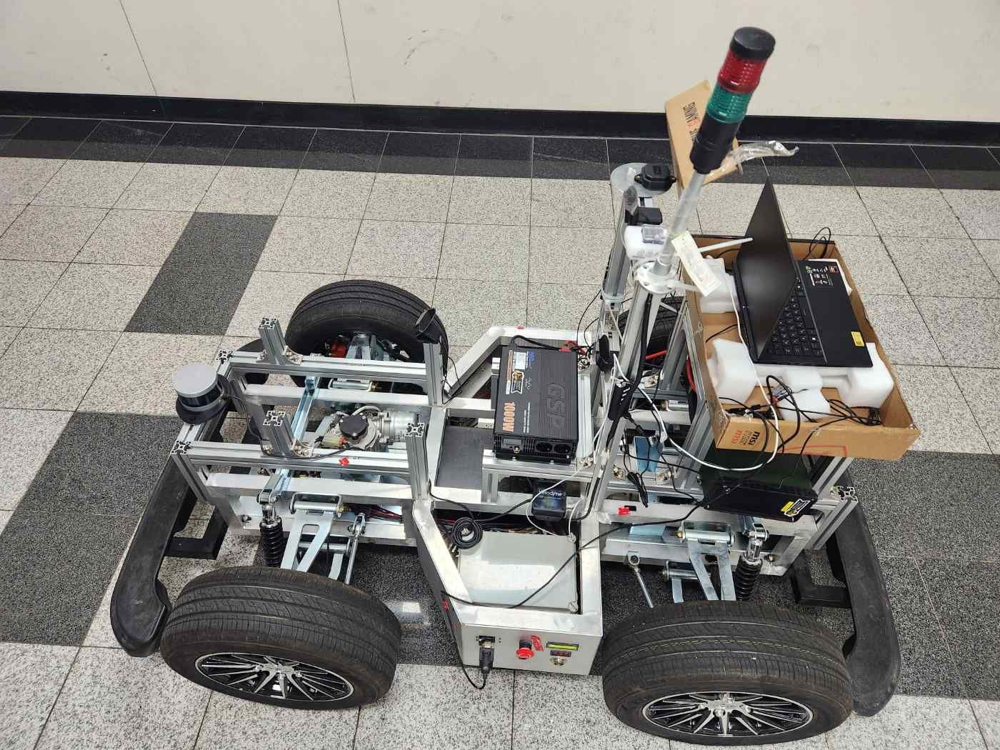
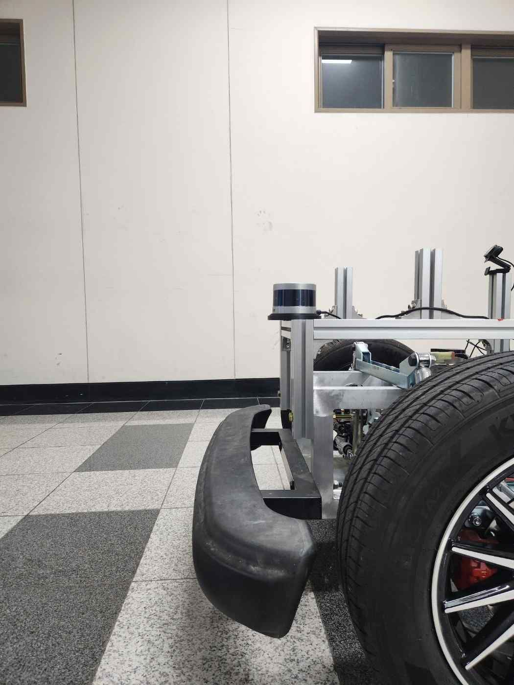
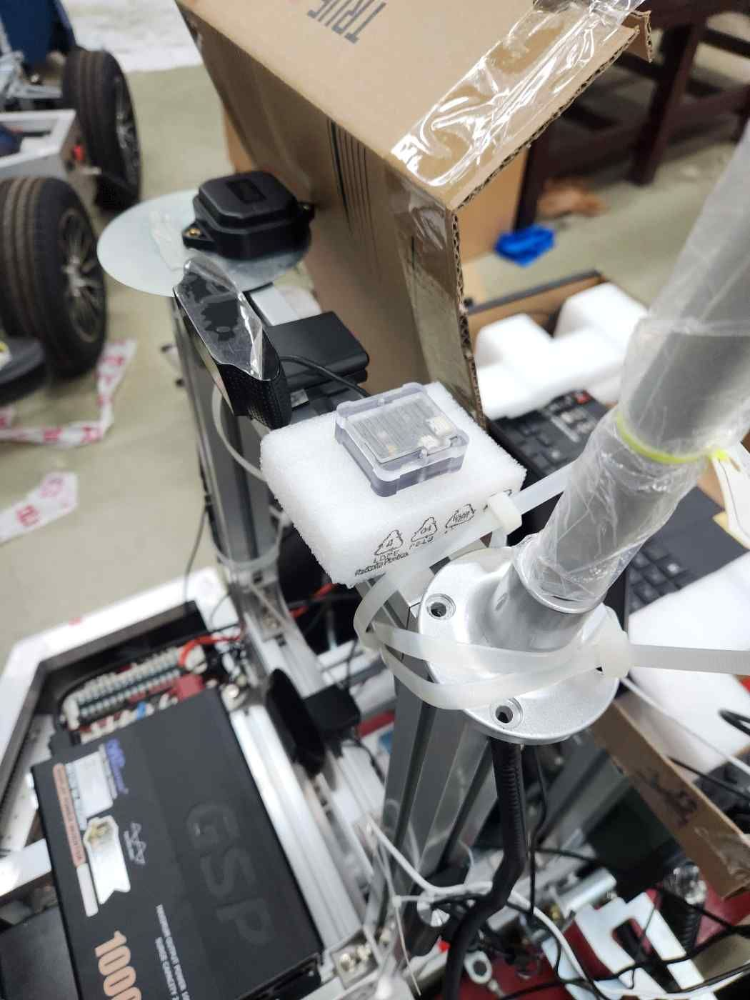
- LiDAR차량 앞쪽 프레임 · 장애물 인식
- 카메라3대 · 앞쪽 프레임의 기둥 등 · 차선·신호등·표지판 용도로 나눈 설계
- RTK-GPS차량 중앙 프레임 기둥 위 안테나 · 위치 보정(RTK 보정 정보는 네트워크로 받음)
- IMU차의 방향 · 쌓이는 오차를 잡지 못해 VectorNav에서 EBIMU로 교체(팀) · 초안 설계는 모터 자기장을 피한 위치
- ERP42바퀴 회전량·조향각 → 위치 예측 · 조향·속도·브레이크 명령 수신
- 노트북가운데를 높게 쌓은 프레임 위 · ROS 2 노드 실행
- 전력보조 배터리(LiFePO4 12.8V·100Ah)와 1000W 인버터 · 실도로 시험에서 드러난 전력 부족 보강
- 프레임팀이 함께 잰 차량 치수 → 팀원 초안 CAD → 팀과 함께 직선 알루미늄 프로파일을 분해·조립하며 배치 조정(구조를 바꿔 가며 맞출 수 있게 고정하지 않음)
저는 팀과 함께 프레임을 조립하고 실차에 대 보며 센서 배치를 다시 잡았고, 카메라 장치·해상도, IMU 포트, RTK 접속, 속도·제동 값과 전륜 정렬은 직접 실차에 맞췄습니다.
진행 과정에서 보기 → 01 실차 조정과 반복 테스트 | [03] 중앙에 둔 GPS와 배치 기준 | LiDAR·카메라 장착 사진 | [04] 전륜 정렬과 rosbag 로깅
센서퓨전 위치 추정 (EKF) 본인 주 담당
진행 과정 04 바퀴 회전량으로 위치 계산07 GPS 음영구간의 위치 추정
바퀴 회전량과 조향각으로 차가 움직인 만큼 위치를 계산하고 GPS로 바로잡는 EKF(여러 측정값을 합쳐 위치를 추정하는 필터)로 위치를 구하며, 차의 방향은 IMU로 구합니다. 위치는 초기 GPS 위치를 원점으로 삼은 지도 좌표로 나옵니다.
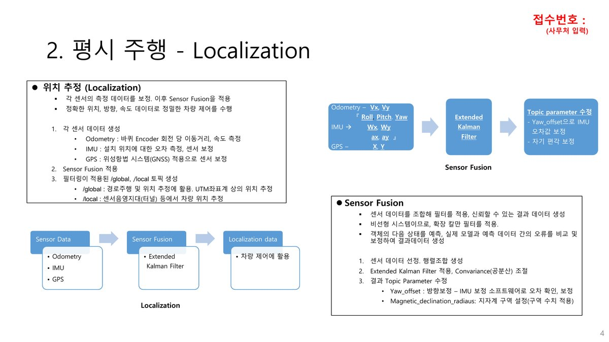
진행 과정에서 보기 → 07 GPS 음영구간의 위치 추정
환경 인지 (카메라 차선 · LiDAR 장애물) 팀 담당 · LiDAR 구현 참여
진행 과정 05 LiDAR 장애물 회피 실험
팀은 카메라 영상과 LiDAR로 주변을 인식하는 기능을 개발·실험했습니다. 카메라 쪽에는 HSV·Hough 차선 처리와 YOLO가, LiDAR 쪽에는 2D 스캔 기반 장애물 회피와 3D 점군 클러스터링 실험이 있습니다. 다만 차선 인식은 대회 주행 적용 여부가 확인되지 않았고, LiDAR 장애물 회피는 현재 저장소 코드에서 경로추종과의 연결이 완성되지 않은 실험 단계입니다.
진행 과정에서 보기 → 05 LiDAR 장애물 회피 실험
경로추종 (방향 오차 비례 조향 · 저역통과) 본인 주 담당
진행 과정 03 경로점 만들기06 곡선 구간의 경로추종
앞쪽의 가까운 경로점을 목표로 고르고, 경로와의 방향 오차에 비례해 조향한 뒤 직전 조향값과 섞어 곡선에서 조향이 튀지 않게 합니다.
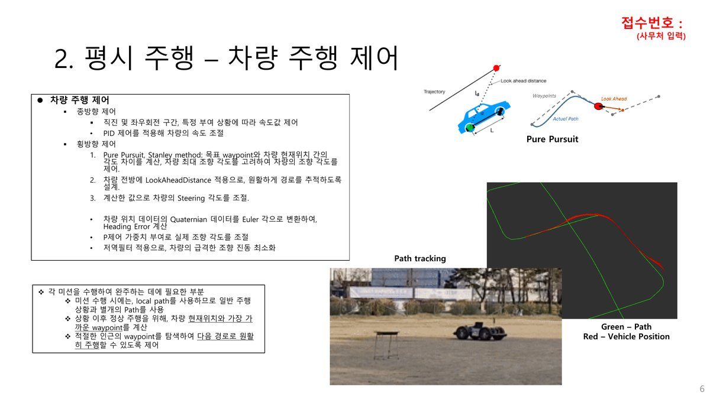
진행 과정에서 보기 → 06 곡선 구간의 경로추종
주행 명령 판단 노드 (프로토타입) 본인 주 담당
진행 과정 08 주행 명령 중재(프로토타입)
여러 기능이 낸 주행 명령 중 방금 들어온 유효한 명령 하나를 고르고, 유효한 명령이 없으면 완전 제동하도록 한 소스 코드 수준 프로토타입입니다.
진행 과정에서 보기 → 08 주행 명령 중재(프로토타입)
진행 과정 각 번호를 펼치면 사진과 함께 자세한 설명이 나옵니다. 진한 글씨는 제 담당 및 주요 과정입니다.
아래는 대회를 준비하며 센서와 기능을 하나씩 맞춰 간 구현 과정입니다. 대회 주행은 이 기능들이 모두 맞물린 결과라기보다, 차가 굴러가 예선 코스를 완주한 데에 가깝습니다.
실차 조정과 반복 테스트
환경 준비 · 문제해결구현 참여문제 파트실차(센서 장착 프레임·전력·통신·차체)문제노면이 나쁠 때 센서 흔들림 · 전력 부족 · GNSS 연결 끊김 · 직진 명령에도 한쪽으로 휘는 차해결팀과 함께 센서 배치 다시 잡기 · 실차 설정값과 전륜 정렬은 직접 조정 · 팀원들과 튜닝·테스트·로깅 반복배운 점코드보다 하드웨어 설정과 차체 상태부터 확인
초안 이해와 프레임 조립
실차 제작 전 팀원은 팀이 함께 잰 차량 치수를 바탕으로 모터 자기장을 피한 IMU, 5° 기울인 전방 LiDAR, 상단 GPS, 용도별 카메라를 반영해 알루미늄 프로파일 프레임 초안을 CAD로 설계했습니다. 저는 차량 실측과 핵심 센서 위치, 제한 크기 토의에 함께하며 초안을 이해했고, 실차 제약을 고려해 팀과 함께 센서 장착 프레임을 구현·조립했습니다.
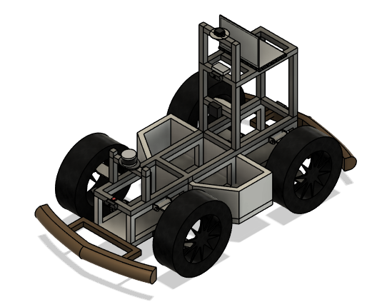
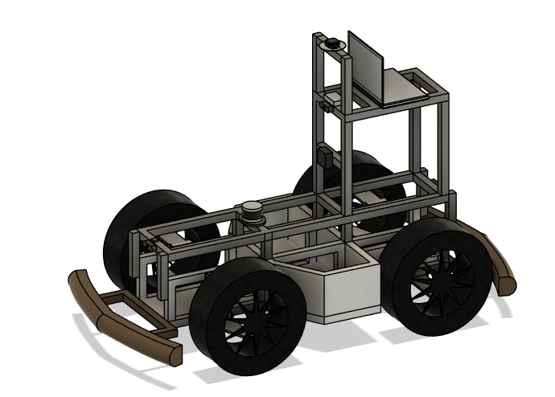
실도로 시험에서 이어진 문제
원정 연습 전 실도로 시험에서 측위·경로추종·차선 인식을 함께 돌리자 다음 문제가 이어져 대응 필요성을 확인했습니다.
1 보조 배터리(LiFePO4 12.8V·100Ah·1,280Wh)와 1000W 인버터로 보강
2 실측으로 센서 배치를 다시 잡음 → [03] 중앙에 둔 GPS와 배치 기준
3 RTK 보정 정보를 받는 네트워크가 끊긴 문제 — 시험 때 휴대폰을 이더넷·핫스팟으로 연결해 해결
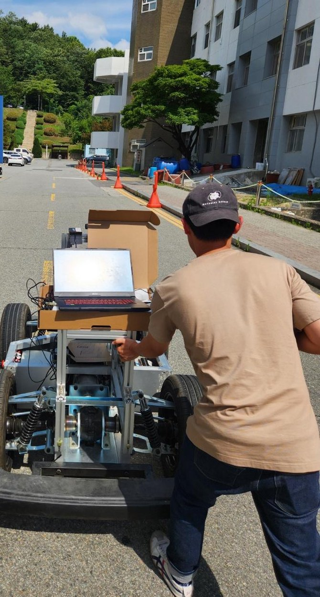
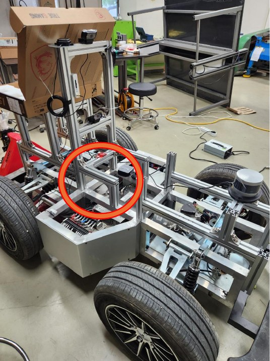
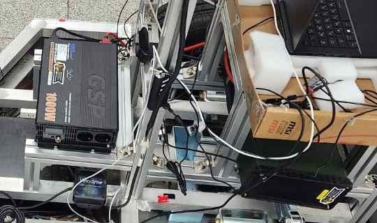
중앙에 둔 GPS와 배치 기준
노면이 나쁜 구간에서 센서가 흔들렸지만 프레임을 처음부터 다시 설계할 여력이 부족해서, 저는 팀과 함께 실차에 직접 대 보며 센서 부착 위치와 주행 중 안정성을 기준으로 초안 배치를 다시 잡았습니다. 위치 추정 기준점이 차량 중앙이라 GPS 등을 중앙에 두고, 보조 배터리·노트북을 올리려고 가운데를 높게 쌓았습니다.
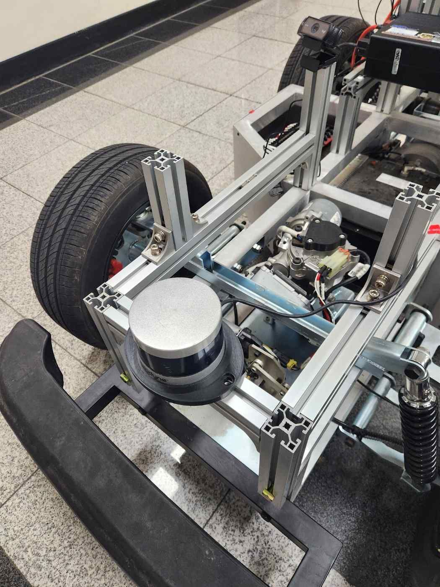
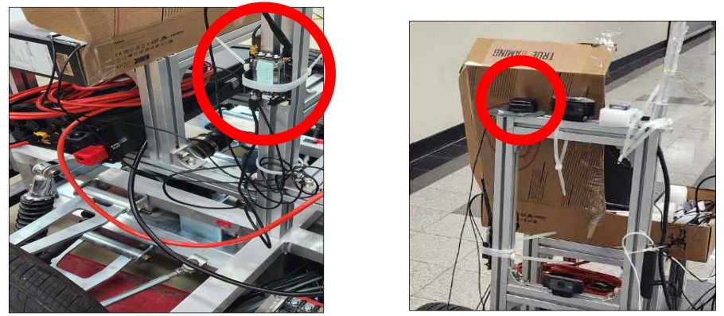
전륜 정렬과 rosbag 로깅
저는 카메라 장치·해상도, IMU 포트, RTK 접속, 속도·제동 값을 실차에 맞추고 각 노드를 구동해 ROS 2로 통합했으며, 직진 명령에도 한쪽으로 휘던 차는 전륜 정렬이 틀어져 있어 직접 조정했습니다. 팀원들과는 튜닝·테스트 주행·rosbag 로깅·분석을 반복했습니다.
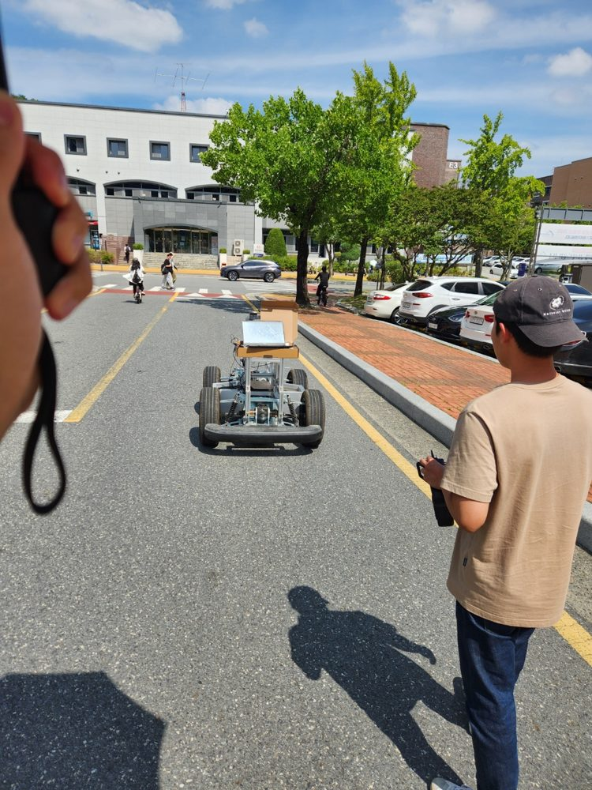
이 과정에서 문제가 생기면 코드보다 진동·전력·정렬 같은 하드웨어 설정과 차체 상태를 먼저 확인하고 실물에 맞춰 기준을 세우는 방식, 그리고 튜닝·테스트·로깅을 반복하며 성능을 끌어올리는 방식을 익혔습니다.
단일 제어 PC 기반의 ROS 2 센서 구동과 시스템 통합
환경 준비본인 주 담당무엇제어용 노트북 한 대에서 플랫폼과 센서들을 ROS 2 환경으로 연동·통합방법ROS 1에서 센서별 구동 확인 → 센서 출력 주기(Hz)·해상도·포트 실차 튜닝 → 한 노트북에서 ROS 2로 통합맡은 일센서별 구동 점검 · 출력 주기·해상도·포트 실차 튜닝 · ROS 2 시스템 통합결과한 노트북에서 센서와 차량을 함께 구동해 실도로 시험·데이터 수집에 사용
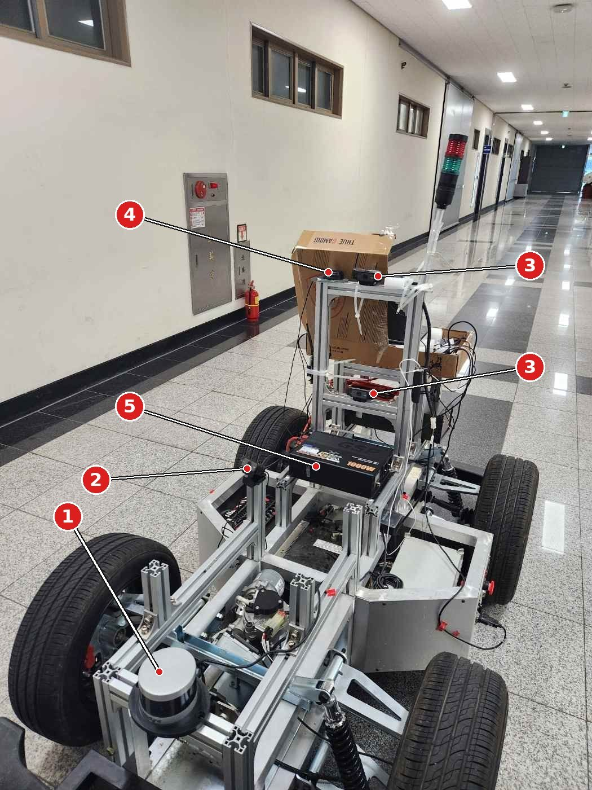
ROS 1에서 먼저 익힌 센서 구동
실차 통합에 앞서 ROS 1 환경에서 카메라·IMU·GPS(RTK 보정)·LiDAR 패키지를 차례로 설치하고, 센서별 연결 포트와 네트워크를 확인해 데이터가 들어오는지 하나씩 띄워 봤습니다. 이 과정을 센서 보고서로 정리해 두었고, 이후 ROS 2에서 센서를 다시 구동할 때의 출발점으로 삼았습니다.
통신 인터페이스별 단독 구동
이더넷 통신 기반의 3D LiDAR와 USB·시리얼 통신을 사용하는 카메라, IMU, RTK-GPS를 단일 제어용 노트북에 물리적으로 연결하고, 각 하드웨어에 맞는 ROS 2 패키지를 빌드하여 데이터가 정상적으로 들어오는지 하나씩 독립적으로 점검했습니다.
센서 주기·해상도와 포트 실차 튜닝
카메라 해상도·연결 포트와 센서 출력 주기(Hz)를 실차에 맞춰 직접 조정했고, 포트를 나눠 여러 대의 카메라를 함께 구동했습니다.
RTK 보정 신호 유선 접속 환경 구성
GPS 위치를 RTK 보정 신호로 바로잡기 위해 보정 신호를 수신할 인터넷 연결이 필요했고, 시험 주행 중 이 네트워크가 끊긴 적이 있었습니다. 연결에는 휴대폰 핫스팟을 활용하되, 대회장에서 다른 팀들과 무선 간섭이 생길 것도 우려하여 휴대폰과 노트북을 유선으로 연결했습니다.
한 노트북에서 함께 실행
차량 플랫폼과의 시리얼 통신 노드와 각 센서 노드를 단일 노트북에서 함께 실행하도록 ROS 2로 통합했습니다.
경로점 만들기
구현본인 주 담당무엇경로추종 시험용 가상 경로와 주행용 위도·경도 경로점방법전공(CAD응용)의 베지어 곡선으로 8자 시험 경로 → 위도·경도를 직접 측정해 경로점 만들기맡은 일8자 시험 경로 수식 구현 · 실측 위도·경도 경로점으로 전환결과운동장 8자 주행 시험 · 측정한 경로점을 따라가는 주행 테스트(팀 내부)
베지어 곡선으로 만든 8자 시험 경로
경로추종을 시험하려고 가상 경로점이 필요해, 전공 과목 CAD응용에서 배운 베지어 곡선(점 몇 개로 매끄러운 곡선을 만드는 방법)을 바탕으로 연속 곡선을 수식으로 구현했습니다. 좌표 13개로 잡은 8자 모양 경로를 200여 개의 점으로 늘려 매끄러운 시험 경로를 만들고 주행을 시험했습니다.
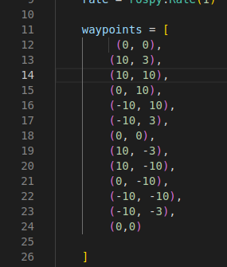
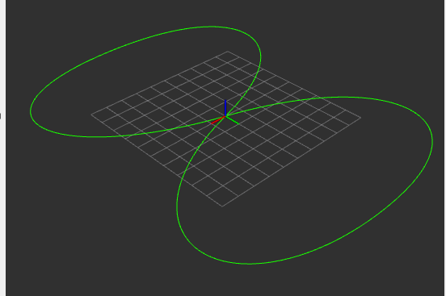
실측 위도·경도 경로점으로 전환
보고서에는 이 8자 경로가 초기 좌표계일 뿐 지구 좌표가 아니어서 실제 도로 시험 전에 바꿔야 한다고 적었습니다. 이후 시험용 가상 좌표 대신 위도와 경도를 직접 측정해 경로점을 만드는 방식으로 바꾸었고, 측정한 경로점을 지도 좌표로 바꿔 내보낸 과정은 07 위치 추정 › 초기 GPS 원점의 지도 좌표에 이어집니다.
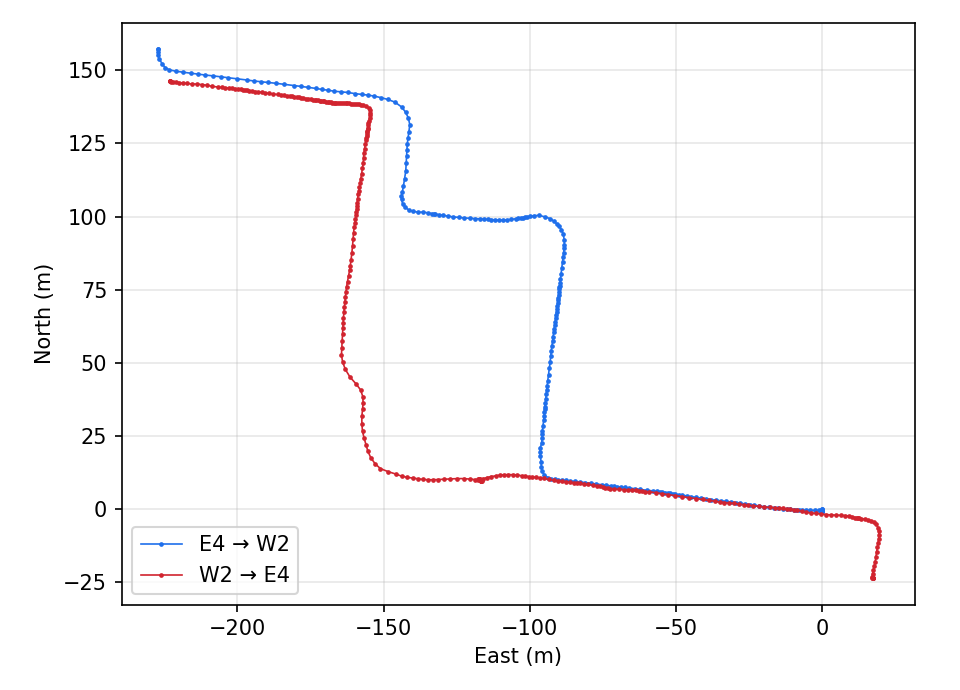
이 작업으로 전공에서 배운 곡선 수식을 시험용 가상 경로로 직접 구현해 보고, 실도로에 맞춰 실제 좌표를 측정하는 방식으로 넘어가는 과정을 익혔습니다.
바퀴 회전량으로 위치 계산(오도메트리)
구현본인 주 담당무엇바퀴 회전량과 조향각으로 차의 이동거리·방향 계산방법타이어 반지름 실측 → 이동거리·회전각 누적 계산 코드 작성 → 한 바퀴 회전량 비교로 튜닝맡은 일계산 코드 작성·실측 튜닝결과남은 센서퓨전 위치 추정(EKF) 코드의 위치 예측 단계에서도 같은 실측 상수와 계산을 씀
실측 기반 이동거리 계산과 튜닝
차량 상태 신호에서 바퀴 인코더 값과 조향값을 받아 이동거리와 회전각을 계산하는 코드를 작성했습니다. 타이어 반지름은 공기압과 장착 상태를 반영해 직접 잰 값(0.265 m)을 넣었고, 바퀴가 한 바퀴 돌 때 계산된 이동량이 얼마나 늘어나는지 비교하며 값을 맞췄습니다.
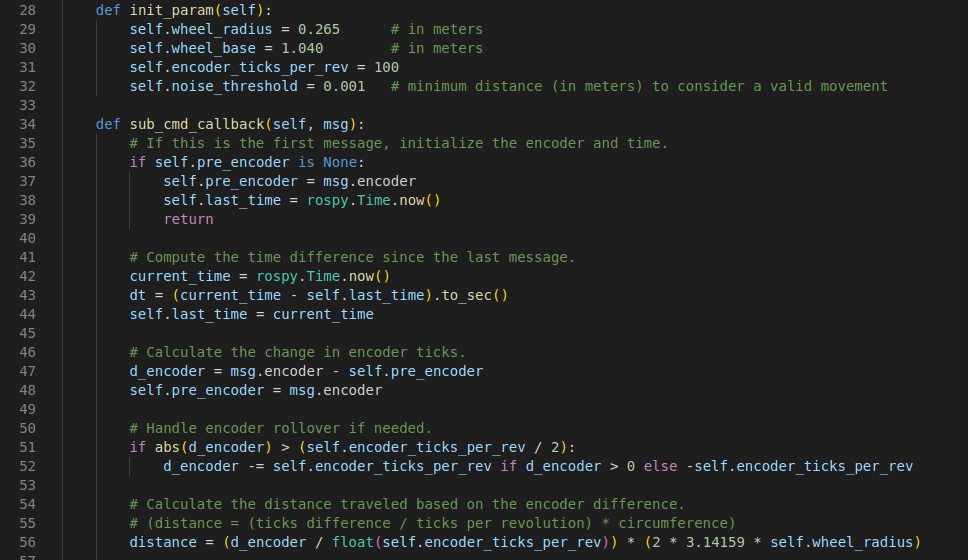
RViz 확인과 IMU 융합 과제
계산 프로그램을 차량 드라이버와 함께 실행해, 바퀴를 돌리면 위치 출력 값이 바뀌는 것을 RViz와 터미널에서 확인하고 보고서로 정리했습니다. 보고서에는 차의 방향을 더 정확히 얻기 위해 IMU와 바퀴 센서를 합치는 일을 다음 과제로 적었습니다.
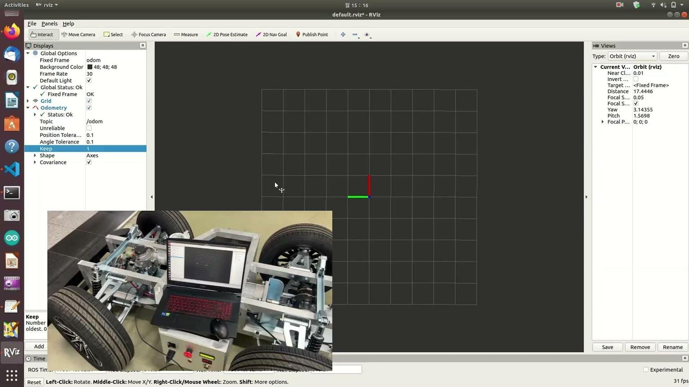
남은 EKF 코드의 위치 예측에서도 같은 계산
여러 센서를 합쳐 위치를 구하는 남은 EKF 코드의 위치 예측 단계에서도 이 바퀴 이동거리·회전각 계산과 같은 실측 상수를 씁니다(07 GPS 음영구간의 위치 추정).
이 작업으로 실측한 차량 수치를 계산식에 넣고 실제 움직임과 비교해 맞추는 방법을 익혔습니다.
LiDAR 장애물 회피 실험
구현구현 참여무엇LiDAR로 앞의 장애물을 찾아 빈 공간 쪽으로 피하는 주행방법2D 스캔으로 시작 → 빈 공간 쪽 조향 설계 → 3D 점군 묶기·콘 중심선 따라가기 실험맡은 일초기 2D 회피 설계 보고서 작성 · 회피 코드 구현 참여 · 라바콘 구입 · 사진 촬영결과책상·사람을 장애물로 둔 회피 테스트(팀 내부) · 경로추종과의 연결은 실험 단계
2D 스캔으로 시작한 설계와 장착 높이 한계
팀은 LiDAR의 대회 쓰임을 장애물 회피와 라바콘 주차로 보고, 먼저 2D 스캔으로 장애물을 찾는 방식부터 접근했습니다. 저는 이 초기 설계를 보고서로 정리하며, 예정된 LiDAR 장착 높이로는 소형 장애물과 차량은 볼 수 있지만 주차 미션의 라바콘을 찾기엔 맞지 않아 회피 알고리즘을 완성한 뒤 필요하면 3D 데이터로 넓힐 계획을 적었습니다.
빈 공간 쪽 회피 설계와 3D 점군 실험
팀은 장애물이 감지된 각도 사이에서 좌우 빈 공간을 비교해 더 넓은 쪽으로 차를 돌리는 회피 방식을 설계했습니다. 이후 빈 공간 각도에 맞춰 바로 조향을 보내는 방식부터, 3D 점군에서 가까운 점끼리 묶어 장애물로 보는 클러스터링, 라바콘 사이 중심선을 따라가는 방식까지 여러 회피 코드를 실험했고 저도 이 구현 과정에 함께 참여했습니다.
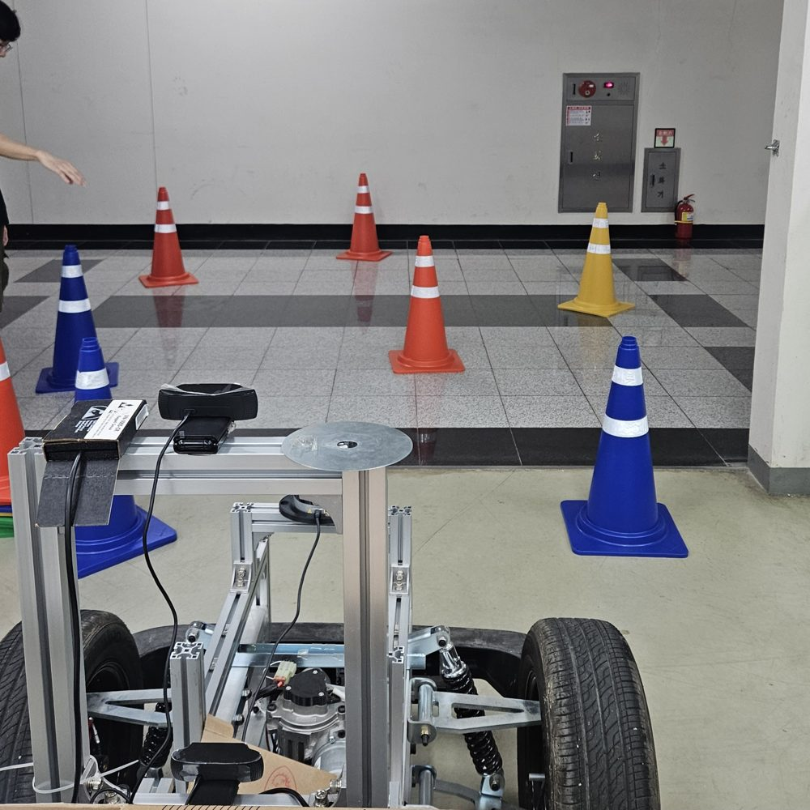
경로점 추종 중 회피 테스트와 다음 과제
2025년 4월 팀은 측정해 모은 경로점을 따라 달리며 책상과 사람을 장애물로 두고 피해 가는지 보는 테스트를 했습니다(한눈에 보기의 테스트 영상). 7월 실도로 시험은 위치 추정·경로추종·차선 인식까지 함께 돌렸고, 장애물 회피를 함께 돌리는 일은 다음 과제로 남았습니다. 지금 남은 코드에서 회피는 경로추종과 연결되지 않은 실험 단계입니다.
이 작업으로 센서를 단 위치가 인식할 수 있는 대상을 정한다는 점을 보고, 2D에서 3D로 단계적으로 넓혀 가며 실험하는 순서를 익혔습니다.
곡선 구간의 경로추종
구현본인 주 담당무엇경로점을 따라가되 곡선에서 조향이 튀지 않는 경로추종방법팀원들과 Pure Pursuit·Stanley 검토 → 방향 오차 비례 조향 + 직전 조향값과 섞기 → 남은 코드도 같은 틀맡은 일경로추종 구현결과운동장 8자 주행 시험 · 경로점과 차량 위치를 겹친 그래프(팀 내부 테스트)
Pure Pursuit·Stanley 검토
팀원들과 여러 경로추종 기법(Pure Pursuit·Stanley)을 검토한 뒤, 팀 연구계획서의 설계대로 경로와의 방향 오차에 비례해 조향하고 직전 조향값과 섞는 단순한 방식으로 구현했습니다.
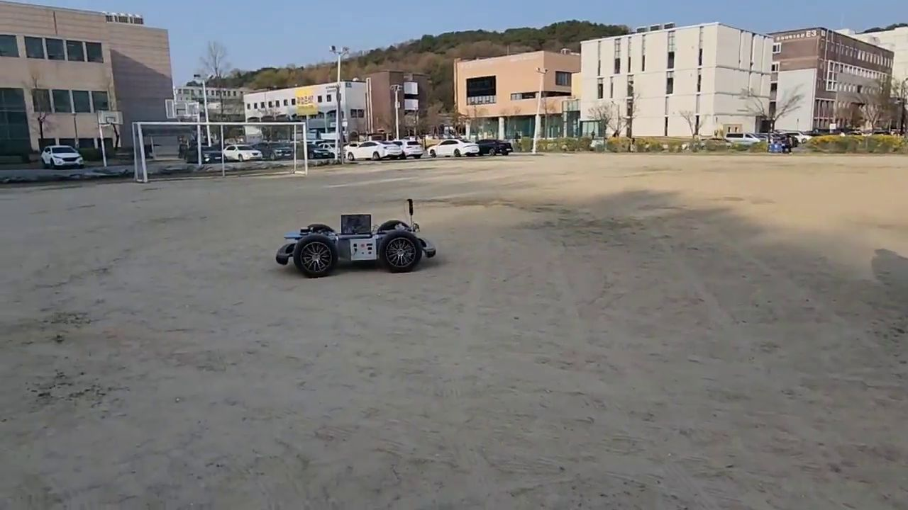
3월 보고서의 조향 방식
목표 경로점과 차의 방향 차이에 비례해 조향하되 최대 조향각을 넘지 않게 자르고, 조향이 급하게 바뀌지 않도록 직전 조향값과 일정 비율로 섞었습니다. 이 틀은 남아 있는 팀 코드의 경로추종에도 같은 방식으로 이어졌습니다.
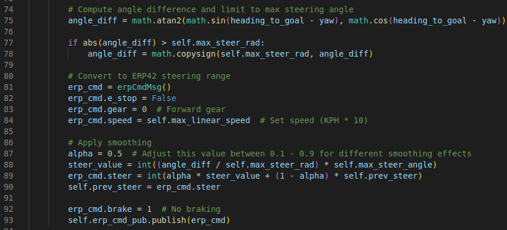
운동장 8자 주행 시험과 결과 그래프
ERP42에 IMU·GPS를 연결하고 위치 계산·8자 경로 생성·경로추종을 차례로 실행해 운동장에서 8자 주행을 시험했고, 차량이 계산한 자기 위치를 경로점과 겹친 그래프로 정리했습니다. 두 선은 대부분 겹쳤고 일부 구간에서 조금 벗어났습니다.
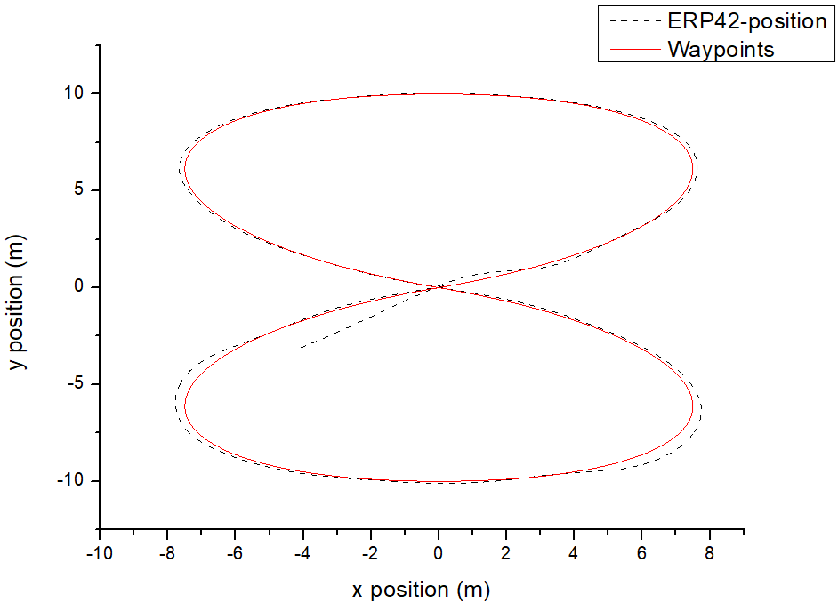
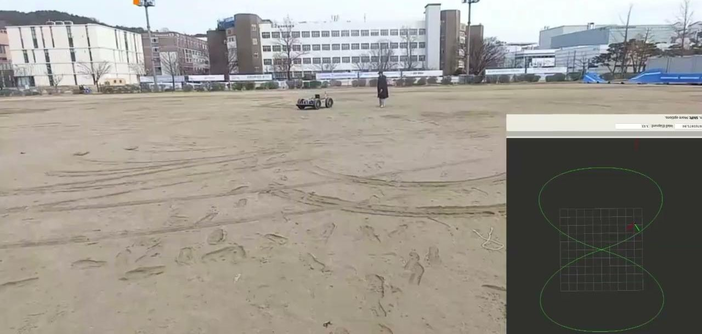
이 작업으로 정교한 기법보다 실제 차량에 맞는 단순한 구현을 고르는 판단을 익혔습니다.
GPS 음영구간의 위치 추정
문제해결본인 주 담당문제 파트측위(차량 위치 추정)문제120m 안팎 GPS 음영구간 · 갈수록 쌓이는 IMU 오차(drift)해결바퀴 회전량·조향각으로 위치를 예측하고 GPS로 바로잡는 EKF 적용 · 팀은 IMU 교체배운 점센서 하나가 흔들려도 여러 측정값을 합쳐 위치를 유지하는 설계
120m 안팎 음영구간과 IMU 오차
예선 코스에는 120m 안팎의 GPS 음영구간(철골 구조 등)이 있어 GPS가 잡히지 않았고, IMU는 갈수록 오차가 쌓였습니다(drift). 차가 자기 위치를 잃으면 경로점을 따라갈 기준도 함께 잃게 됩니다.
바퀴 회전량 계산과 IMU 융합 과제
직접 작성해 실측으로 튜닝한 바퀴 회전량 계산을 바탕으로, 보고서에 차의 방향을 더 정확히 얻기 위해 IMU와 합치는 일을 다음 과제로 적어 두었습니다.
EKF 적용과 IMU 교체
저는 각 센서를 구동해 얻은 데이터를 써서 바퀴 회전량과 조향각으로 위치를 계산하고 GPS로 바로잡는 EKF를 적용했으며 차의 방향은 IMU로 구했습니다. 처음 쓰던 IMU는 쌓이는 오차를 잡지 못해 위치 추정이 부정확했고, 팀은 7차 원정 연습 뒤 IMU를 새로 구입해 교체했습니다.
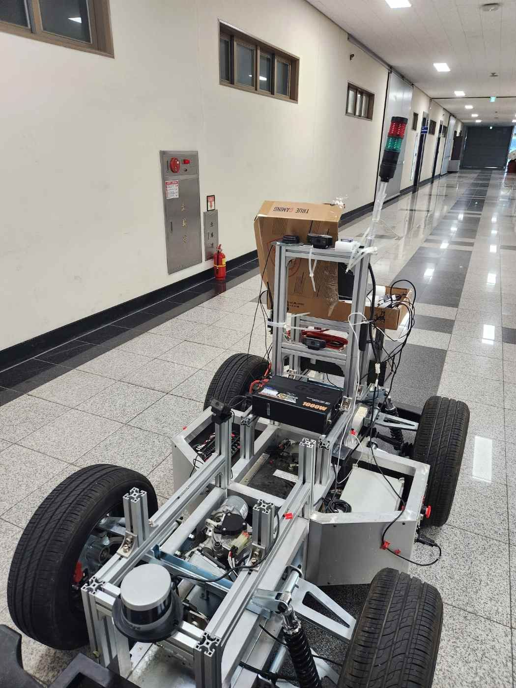
초기 GPS 원점의 지도 좌표
위치는 초기 GPS 위치를 원점으로 삼은 지도 좌표로 나오고, 팀은 미리 기록한 경로점도 같은 좌표로 바꿔 주행 경로로 내보냈습니다. 경로점을 직접 측정해 만든 과정은 03 경로점 만들기에 있습니다.
이 작업으로 센서 하나가 흔들려도 여러 측정값을 합쳐 위치를 유지하도록 설계하는 관점을 익혔습니다.
주행 명령 중재(프로토타입)
구현본인 주 담당무엇여러 기능이 낸 주행 명령 중 따를 것 하나 고르기방법차선·경로 명령 우선순위 · 오래된 명령 제외 · 유효 명령이 없으면 완전 제동결과소스 코드 수준 프로토타입
우선순위와 완전 제동
차선·경로 명령에 우선순위를 두고 오래된 명령은 빼며, 유효한 명령이 없으면 완전 제동하도록 했으나, 설계의 신호·표지판 단계는 구현하지 못했고 대회 당일 주행에 이 노드를 사용했는지는 확인되지 않았습니다.
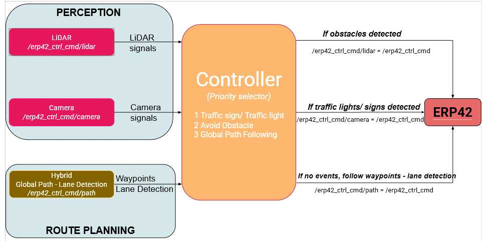
이 작업으로 명령이 없거나 오래됐을 때는 차를 세우는 쪽을 기본으로 두고, 판단·인지·제어를 나눠 보는 설계 방식을 익혔습니다.
팀에서 일한 방식
- 팀 구성4인 팀(실개발 2~3인) · 저는 팀장
- 보고주간 일정을 테스트 사진·영상과 함께 보고 → 지도교수 보고 · 팀 공유 · 이후 대회에 참가할 후배들의 참고 자료
- 기록당시 주행 기록(rosbag) 정리 · 다시 실험할 때 참고할 시뮬레이션 구성과 의도한 실험 방법
- 외부 학습대회 기술세미나에 참석해 강연 내용을 메모로 정리하고, 메모의 튜닝 → 시험 주행 → 데이터 로깅 → 분석 → 개선 반복 사이클을 팀 실차 시험에 가져와 적용을 시도
자기소개서 단점 항목 — 속도만 보던 조급함을 흐름을 읽는 눈으로 바꿨습니다.
일이 예상보다 늦어지면 조급함이 말투에 드러나곤 했습니다. 자율주행 대회 팀장을 맡았을 때, 다른 대학보다 인원과 경험이 부족하다는 생각에 진행 속도를 자주 확인했고, 설명했던 작업이 멈췄다고 느끼면 답답함을 내비치기도 했습니다.
그러다 혼자 끙끙대고 있는 팀원을 보게 되었고, 제 반응이 질문을 어렵게 만들 수 있겠다고 생각했습니다. 이후 막힌 지점을 함께 얘기하였는데, 작업이 늦어진다고 느낀 이유는 업무에 대한 진행 방향이 달라서였단 걸 알게 되었습니다.
조급한 마음에 진행 속도에만 매달려, 정작 일이 어디서 막혀 있는지는 보지 못했단 점을 반성했습니다. 필요했던 건 재촉이 아니라, 작업의 순서와 흐름이 끊기는 부분을 파악해 막힌 곳을 함께 푸는 일이었습니다.
지금도 일정이 촉박하면 마음이 급해지지만, 재촉하기보단 전체 흐름에서 막힌 지점과 서로의 이해가 맞는지부터 확인합니다.
본인 담당:
- 팀장(개발 일정 수립·공유, 지출 관리, 공학 실습실을 대여해 팀원과 함께 쓸 실습 환경 구성·물품·열쇠 관리, 인수인계 문서화)
팀원들과 함께:
- 센서 장착·연결
배운 점
- 재미팀이 함께 구상한 구조를 실기에서 조립해 견고하게 다듬고, 팀원 의견과 반복 시험으로 조금씩 나아지는 과정
- 조언지도교수님의 "아무리 사전준비를 잘 해가도, 실제 필드 테스트에선 문제가 드러날 수 있다"는 말 — 실차 시험에서 드러난 문제가 실차 조정으로 이어짐
- 깨달음인지 기능을 더하기 전에 측위와 경로추종이라는 최소 기반부터 실차에서 다져야 상위 모듈이 빠져도 주행이 이어진다는 점은, 인지 일부가 빠진 상태에서도 대회 예선을 완주한 경험(팀 회고 기준)으로 확인했습니다.
- 통합Linux 환경에서 다양한 센서의 ROS 2 패키지를 빌드·튜닝하고 시리얼 통신으로 차량 플랫폼을 제어하며, 이기종 하드웨어와 소프트웨어를 한 시스템으로 엮어내는 엔지니어링 기초를 익혔습니다.
- 측위GNSS로 지구 위 위치를 받는 절대 측위와 바퀴 회전량으로 움직임을 쌓는 상대 측위를 EKF로 융합하는 개념을 이해했습니다.
- 인지차선 감지를 RGB 필터로 먼저 시작했지만 야외에서 달리는 대회 특성상 빛 조건에 민감해, HSV 색 공간을 공부해 도입했습니다. 대회장에서 찍은 데이터로 차선·신호등·표지판 감지 모델을 전이학습해 활용하는 방법도 익혔습니다.
- 현장 통신RTK 보정 신호 접속이 끊기지 않도록, 무선 간섭이 우려되는 대회장에서는 휴대폰 핫스팟을 노트북에 유선으로 연결해 쓰는 방법을 익혔습니다.
기술 상세
참고 문서(팀 MTP가 대회 제출용으로 함께 작성, 개인정보 처리본): 연구계획서 | 기술보고서
연구계획서 목차·키워드(PDF 쪽 기준 — 슬라이드 인쇄 번호와 다를 수 있음):하드웨어·소프트웨어 구성 p2 · 위치 추정 p3 · 주행 경로 설정 p4 · 차량 주행 제어 p5 · LiDAR 장애물 회피 p6 · 카메라 인식 p7 · Work Flow Chart p10
기술보고서 목차·키워드(PDF 쪽 기준):플랫폼 Layout p5 · 센서 Layout p7 · 센서 장착 설계 p11 · 환경 인지(카메라·LiDAR) p16 · 차량 측위 p20 · 판단 로직 p21 · 플랫폼 제어 로직 p22
코드 근거
- 남아 있던 팀 코드를 모아 둔 개인 저장소 Erp42_ws — 기술 전체(측위·경로계획·판단·인지·차량 I/O)는 README 참고.